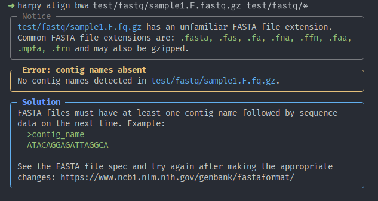

Developing Harpy
Harpy is an open source program written using a combination of BASH, R, RMarkdown/Quarto, Python, and Snakemake. This page provides information on Harpy's development and how to contribute to it, if you were inclined to do so.
Before we get into the technical details, you, dear reader, need to understand why Harpy is the way it is. Harpy may be a pipeline for other software, but there is a lot of extra stuff built in to make it user friendly. Not just friendly, but compassionate. The guiding ethos for Harpy is "Don't hate the user". That means there is a lot of code that checks input files, runtime details, etc. before Snakemake takes over. This is done to minimize time wasted on minor errors that only show their ugly heads 18 hours into a 96 hour process. With that in mind:
Code should be written clearly because someone else will need to read it at some point, and that person could be future-you who hasn't seen or thought about that code for a while. Write nicely. Annotate.
Documentation is just as important as the code. No user-facing features are undocumented, and the documentation should read like something that a new student can pick up and understand. Good documentation, written compassionately, will lower the barrier of entry to people who just want to process their haplotag data. Harpy isn't about ego, it's about accessibility. We invest in this documentation because we want to.
Error messages should provide all the information a user needs to fix the problem and retry. It's not enough to exit when an error is identified. Collate the things causing the error, explain to the user what and why. Harpy follows a style of presenting and explaining the error, then providing a solution and showing exactly what files/rows/columns/etc. caused the error. Be kind to users.

These are Harpy error messages
Installing dev version
As of v3.2, the easiest way to locally install the development build is to use pixi.
First, you'll need to install pixi if you don't already have it on your system:
curl -fsSL https://pixi.sh/install.sh | shThen, you'll need to clone the Harpy git repository:
git clone https://github.com/pdimens/harpy.gitAfter, you can install the environment manually or have pixi do it automatically
when you activate the pixi shell:
cd harpy
pixi install
pixi shell
# harpy ...cd harpy
pixi shell
# harpy ...Alternatively, you can prefix harpy commands with pixi run:
pixi run harpy impute...Harpy's components
source code
Harpy runs in two stages:
- it recieves command line inputs and parses them
- uses the parsed command line inputs to run a specific Snakemake workflow
To accomplish this, Harpy is written as a Python program, using rich-click
for the aesthetically pleasing interface. Since Harpy also relies on Snakemake
snakefiles for each module, bash scripts, python scripts, and rmarkdown files,
not all of it can be installed as a pure python program using setuptools.
The build process installs part of Harpy as a pure-python command line program, but
all the extra files Harpy needs to run need to be installed separately. All of
this is handled by resources/buildlocal.sh. It's a little circuitous, but it's how
we can keep the source code modular, installable, and have the flexibility of
using non-python code.
bioconda recipe
For the ease of installation for end-users, Harpy has a recipe in Bioconda,
which makes it available for download and installation. A semi-updated copy of the recipe is also
stored in resources/meta.yml. The yaml file is the metadata of the package, including software
deps and their versions. Now that Harpy is hosted on bioconda, when a new version is tagged with
a release, Bioconda will automatically create a pull request (after a delay), typically not
requiring any intervention on the development side for the newest Harpy version to be released for conda installation.
The Harpy repository
repo structure
Harpy exists as a Git repository and has 3 standard branches that are used in specific ways during development. Git is a popular version control system and discussing its use is out of the scope of this documentation, however there is no shortage of great resources to get you started. The 3 standard branches in the Harpy repository are outlined in the table below:
development workflow
The dev workflow is reasonably standard:
- create a fork of Harpy, usually from the
mainbranch - within your fork, create a new branch, name it something relevant to what you intend to do (e.g.,
naibr_bugfix,add_deepvariant) - add and modify code with your typical coding workflow, pushing your changes to your Harpy fork
- when it's ready for inclusion into Harpy (and testing), create a Pull Request to merge your changes into the Harpy
mainbranch
containerization
As of Harpy v1.0, the software dependencies that the Snakemake workflows use are pre-configured as a Docker image
that is uploaded to Dockerhub. Updating or editing this container can be done automatically or manually. As of v3.2,
the container has been split into smaller images with a <env>_<version> tags, e.g. harpy:align_3.2 is the tag for
the container with all the software in the conda-equivalent align environment for Harpy v3.2.
automatically
The createrelease GitHub Action will automatically create the multiple Dockerfiles with
harpy containerize
(a hidden harpy command)
and build the new Docker containers, then upload them to dockerhub
with the appropriate version tag.
manually
The dockerfile for that container is created by using a hidden harpy command harpy containerize
harpy containerizewhich does all of the work for us. The result is a series of container/env/Dockerfile files that have all of the pixi environments and shell hooks written into them. After creating the Dockerfiles, the images must then be built with the correct tag.
cd resources
docker build -t pdimens/harpy:env_tag container/envwhere env can be e.g. qc and tag could be something like 3.3, making the tag qc_3.3
Once that's done, the image can be pushed to Dockerhub:
docker push pdimens/harpyAutomations
testing
CI (Continuous Integration) is a term describing automated actions that do
things to/with your code and are triggered by how you interact with a repository.
Harpy has a series of GitHub Actions triggered by interactions with the main branch (in .github/workflows)
to test the Harpy modules depending on which files are being changed by the push or
pull request. It's set up such that, for example, when files associated with
demultiplexing are altered, it will run harpy demultiplex on the test data
in the cloud and notify the Harpy devs if for some reason harpy demultiplex
could not run successfully to completion. These tests do not test for accuracy,
but test for breaking behavior. You'd be shocked to find out how many errors
crop up this way and require more work so Harpy can be resilient to more use cases.
releases
There is an automation
that gets triggered every time Harpy is tagged with the new version. It strips out the unnecessary files and will
upload a cleaned tarball to the new release (reducing filesize by orders of magnitude). The automation will also
build a new Dockerfile and tag it with the same git tag for Harpy's next release and push it to Dockerhub.
In doing so, it will also replace the tag of the containers in all of Harpy's snakefiles from latest to the
current Harpy version. In other words, during development the containers in workflows appear as
container: docker://pdimens/harpy:env_latest and the automation replaces it with (e.g.) container: docker://pdimens/harpy:env_tag.
Same for the software version, which is kept at 0.0.0 (pyproject.toml and __main__.py) in the development version and gets replaced with the tagged version with the automation.
Tagging is easily accomplished with Git commands in the command line:
# make sure you're on the main branch
$ git checkout main
# create the tag locally, where X.X.X is something like 1.7.1
$ git tag X.X.X
# push the new tag to the repository
$ git push origin X.X.X